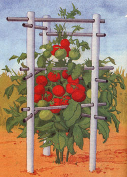
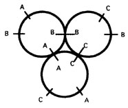

It was the best of the times. It was the worst of times. My success fed my failure. My tomato plants were wonderful, huge with lots of fruit - yes, botanically tomatoes are fruit - slowly ripening in the warm summer sun. I was failing because those tiny wire tomato cages I was using kept falling over, stressing and sometimes breaking the stems.
This was the situation by the end of the summer of '93. My tomato patch looked like a modern art sculpture - string, wire, wooden stakes - all intertwined with tomatoes. Anything to hold up those plants until harvest. I had to find something better by next summer, something inexpensive, lasting, easy to store and strong enough to hold my plants. As I thought about it, the scrounger in me took over.
Three 3-foot-3-inch (or longer) pieces of white PVC pipe or cut a 10-foot piece into three equal pieces.
A total of 15 feet of electrical conduit, cut into six 20-inch pieces.
Note: The dimensions can vary. If you're scrounging, any size will work.
Tools: Hack saw, electric drill or brace, half-inch drill bit.
1) Cut the PVC and electrical conduit to length.
2) Hold or tape the three pieces of PVC together as shown in Figure A (see Image Gallery). Use a straight edge to mark the ends as shown. This ensures that the holes will be at the correct angle to each other for the cross pipes.
4) Repeat step 3, lining up all the Bs and then all the Cs. Make sure that you stagger each set of holes a little so that the cross pipes do not hit each other.
You're all set to put your cages together. Insert the cross pipes so that about 1/2 to 1 inch sticks out on each side. You may have to use a round file to enlarge the holes a little, but you want the cross pipes to fit tightly. Press the pipes into the soil about 8 inches. The watering hole allows me to apply water and fertilizer almost directly to the roots instead of wasting both with normal sprinkling. Weeds are better controlled by keeping the surface of the soil dry and with fewer readily-available nutrients. The low surface moisture also helps with fungal infections of the stems. I have a 5-gallon bucket with a small diameter plastic hose inserted at the bottom. This hose goes into the watering hole of the PVC support and my manure tea is delivered 8 inches below the surface. It's slow but effective. At the end of the season you merely take the cages apart and they easily store in a corner. No more pointed ends of wire cages to catch you unawares.
Cutworms: Stiff, 3-inch piece of cardboard - such as a frozen orange juice container - placed an inch in the soil and up around the stem.
Slugs: Night handpicking, wood ashes, saucers of beer or trap boards.
Spider mites, aphids, flea beetles: Hard hose sprays, diatomaceous earth, ladybugs, onion sprays, pyrethrum or rotenone.
Hornworm: Homemade spray of red pepper juice, Bacillus thuringiensis (Bt), or diatomaceous earth. Leave any hornworms covered with small, white egg cases alone, however. They are parasite-burdened and will soon die and spread the problem to other hornworms.
Nematodes: These invisible killers attack the plant's root system, stunting growth and lowering disease-resistance. Once you suspect trouble, check the roots of the plant and look for little knots. Control: African and French marigolds have been shown to exude a substance that repels nematodes, so plant a few among the tomato plants or, better yet, plant this year's tomatoes where last year's marigolds were. Increasing the amount of organic matter in your soil will also help by increasing the number of nematode predators. Nematode-resistant varieties are also available and are typically labeled VFN.
|
 JOEL PAPADICS Effective, inexpensive, and easy-to-make and store, tomato cages don't get better than this. |
 JOEL PAPADICS Figure A. Hold the three lengths of PVC together and mark the ends, as shown. |
|